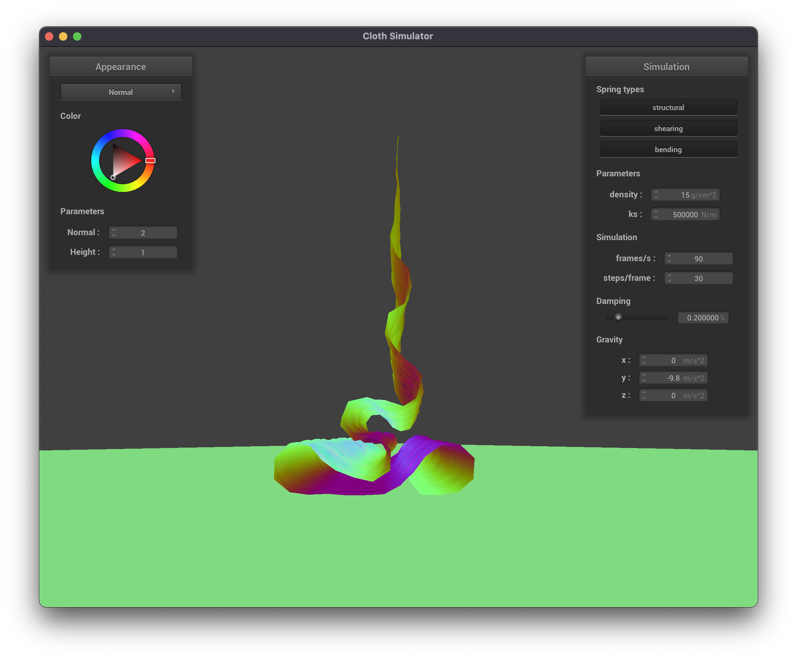

We coded a cloth simulation for this project, using physical concepts like masses and springs to model the cloth. Cloth sims are used for creating clothes and fabrics in animation, which is important for creating realistic motion and saving animators time. To implement our cloth simulation we coded the physics equations for our grid of points and handled cloth collisions with spheres, planes, and the cloth itself. For the final part of the project, we created shaders to shade the cloth with diffuse and Blinn-Phong shading as well as textures, bump maps, displacement maps, and environment-mapped reflections.
Part 1: Masses and springs
In this part of the project, we created a cloth wireframe by construcing a grid of masses and springs. We added every point mass to a 1D point_mass vector,
and different kinds of springs to a 1D spring_mass vector.
We started constructing a grid of evenly space point masses first. To do this, we used a double for loop to iterate through the total number of
height and width point masses, and checked the cloth's orientation to determine how to set each point masses' coordinates. If the cloth was oriented horizontally,
we set the y-coordinate of the point mass to 1.0, and varied positions over the xz plane. If the cloth was oriented vertically, we generated a small random offset for the
z-coordinate and varied positions over the xy plane. We stored each point mass in the point_masses vector in row-major-x-axis order.
After creating the grid of masses, we began implement the grid of springs. Similarly, we created a double for loop to iterate through the total number of
height and width springs. For each of our point masses found in the point_masses vector, we created springs to apply the structual, shear, and bending constraints between point masses.
Each spring takes in pointers to the two point masses that belong at the two ends of the spring, and is added to the 1D spring_masses vector. We created springs of each type for all spring mass based on the rules of each constraint:
1.) Structural: Constraints exist between a point mass and the point mass to its left as well as the point mass above it
2.) Shearing: Constraints exist between a point mass and the point mass to its diagonal upper left as well as the point mass to its diagonal upper right
3.) Bending: Bending constraints exist between a point mass and the point mass two away to its left as well as the point mass two above it
After filling the point_masses and spring_masses vectors with our point masses and springs, we were able to construct a wireframe of our cloth as shown below!

|

|
Part 2: Simulation via numerical integration
In this part of the project we modeled the physical forces on each point mass within the cloth. The first step is to account for the force of gravity on every point. Then we account for the forces between springs using Hooke's law. These forces are stored in the forces field of the point mass. Once we have computed the force on all point masses, we use Verlet integration to compute the new positions of the masses, which integrates these forces over time and incorporates damping. Finally, we constrain the lengths of springs to be no more than 110% of their rest length so that no point is unreasonably moved by the algorithm. Taken together, these many moving point-masses approximate the motion of a real cloth.
The parameter ks controls the stiffness of the cloth. The cloth is most stiff (does not sag and looks like a solid plane rotating about the two pinned points) at high values of ks.
The parameter density controls how much the cloth will fold on itself. With a low density, the cloth is very smooth. And has few ripples in its final position. With high density, the cloth folds onto itself more, creating smaller and more frequent ripples.
|
|

|
Increasing damping slows down the simulation and the apparent speed of the cloth but produces visually similar results by the end of the simulation. With the 4-pinned-corner cloth, damping changes the number of ripples in the cloth after it fully stretches itself: a higher damping value produces fewer ripples.

|

|
Below is the cloth with 4 pinned corners, shaded with the Blinn-Phong shader to better show how the cloth folds on itself.
Part 3: Handling collisions with other objects
In part 3, we implemented the Sphere::collide and Plane::collide method that allowed our mesh cloth to interact with spheres and planes.
Generally, the collide method checks whether or not a point mass is inside the primitive. If it is, we adjust the point mass' position so that it lies just outside of
the sphere/plane's surface.
For sphere primitives, we calculated a vector, called tangent that extended from the given point mass' position to the sphere's origin ( point_mass.position - origin)
and found its Euclidean length by taking its norm(). We knew that the cloth intersects the primitive if this length was less than the sphere's radius. Thus, if the length <= radius,
then we would need to update the point mass' position to be slightly outside of the sphere's surface. To do this, we normalized the tangent vector and calculated a correction vector that would be added
to the point mass' last_position vector. To calculate the correction vector, we simply found the point of intersection between the ray and sphere's surface using the
tangent vector, the radius, and the sphere's origin: (tangent * radius) + origin. Finally, we updated the point mass' position by scaling the correction vector by the constant of friction and
adding this value to its last poisiton ((1 - friction) * correction + last_position).
Below are a few images of the cloth with different ks values.
|
|
|

|
In order to do account for plane-cloth collisions, we did a similar thing as spheres, by calculating the direction (tangent) vector using point_mass.position - point, where point
if a point on the surface plane. To check if there was a collision with the plane, we took the dot product between this vector and normal to the plane, and checked whether its product was negative. It if is, we know that the cloth intersect in some way.
From there, we created a vector last that determines the vector pm.last_position - point. This vector is used to check if the cloth's last position is on a different side of the plan than the cloth's initial position. If
it is, we know that the cloth intersected the plane, and thus we need to bump it back to the correct side of the plane using the correction vector and surface offset. Thus, if the dot product between
last and normal is not negative, we can add the surface offset to our tangent_point (calculated by dot(direction vector, normal)) and apply this to our correction vector. After calculating the correction vector based on
which side the cloth is on, we can finally update its position by scaling the correction by the friction coefficient (1 - friction) and adding this value to its last_position vector.
Below are images of the cloth resting peacfully on the plane!

|
|
Part 4: Handling self-collisions
It is important to handle collisions with points inside the cloth; spring forces alone will not prevent the cloth from falling onto itself. We implement self-collisions by first building a hash map to aid in efficient lookup of points, then iterate through every point, altering positions to enforce a minimum distance between points.
To build the hash map, we hash points by dividing the world space into a grid and computing to which box the point belongs. With the x, y, and z position of the box, we use the formula ((53 + x) * 53 + y) * 53 + z to compute the hash which is inspired by this StackOverflow answer. This formula ensures that boxes close to each other in space get different hashes.


|
When varying the density, the magnitude of the self-collision forces increases. This leads to noisier edges in the cloth (greater displacement of the points) as well as greater frequency of folds. Also, at higher densities, the points far from the plane are affected less by the self-collision forces.

|
A video comparing the rate various densities is below. The screenshot above was taken about 2 seconds in. The images from left to right have densities of 1, 15, and 150 g/cm^2. The three stitched videos are not synced perfectly in time but align closely.
With larger values of ks, the cloth bends at more gradual angles. The folds are larger and more circular and make for more exaggerated motion.

|

|
Part 5: Shaders
For this part of the project, we wrote several shader programs to implement the material shading of the cloth and sphere. A shader program controls how to turn a set of points (for example the points of the cloth) into an image. The vertex shader determines where in space to place the vertices, and the fragment shader specifies how to color the faces connecting vertices. Ultimately it is the fragment shader responsible for determining the final appearance of the materials, so most of the shader programs we wrote were fragment shaders.
Blinn-Phong shading
The Blinn-Pong shading model simulates light behavior to produce a realistic-looking material render. It does not account for shadows and reflections from other objects like a path tracer, but it still models light properties like diffuse reflection, specular reflection, and ambient light from the environment. Some of these properties, like ambient light, are constant for the whole model. Others like specular reflection involve many parameters including camera angle, face normal, and light direction.

|
Texture Mapping
The mesh already passes its UV coordinates to the fragment shader. To implement texture mapping, we use the texture function and pass in the texture and UV coordinate.

|
Bump mapping
To implement the bump map, we compute a normal as the gradient of the bump map texture. The gradient is found by sampling the texture at two locations very close in space in both x and y directions and computing the difference. This normal is scaled by the bump height then rotated into the coordinate space of the original normal by multiplying with the TBN matrix. This is the new normal vector. The TBN matrix is made of columns consisting of the original normal (N) of the face, a tangent vector (T) to the space, and a bitangent vector (B) orthogonal to both of these. Finally, we shade the sphere using the new normal vector and Blinn-Phong shading.
|
|
|
Displacement Mapping
Implementing displacement mapping was quite similar to bump mapping. We first copied our fragment shader code of our Bump.frag to our Displacement.fragDisplacement.vert so that it displaces the vertex positions based on this formula:
Below are images of the displacement texture applied to the sphere! Bumpy!
|
|

|
Environment-mapped Reflections
To implement the mirrored texture, we simply calculated the eye-ray vector, w_o, using vec4(u_cam_pos, 1.0) - v_position and used this eye-ray vector to compute the incoming direction ray. This was
calculated by reflecting the eye-ray vector about the normal at the surface. Finally, we sampled the environment map for the incoming direction, w_i, and used this to get the out_color that would be reflected.
Division of work
For this assignment, Natalie completed parts 1 and 3 while Ryan completed parts 2 and 4. We both worked on part 5. We were able to work well together, and were able to work on parts that were interesting to both of us, while still collaborating on the project together.